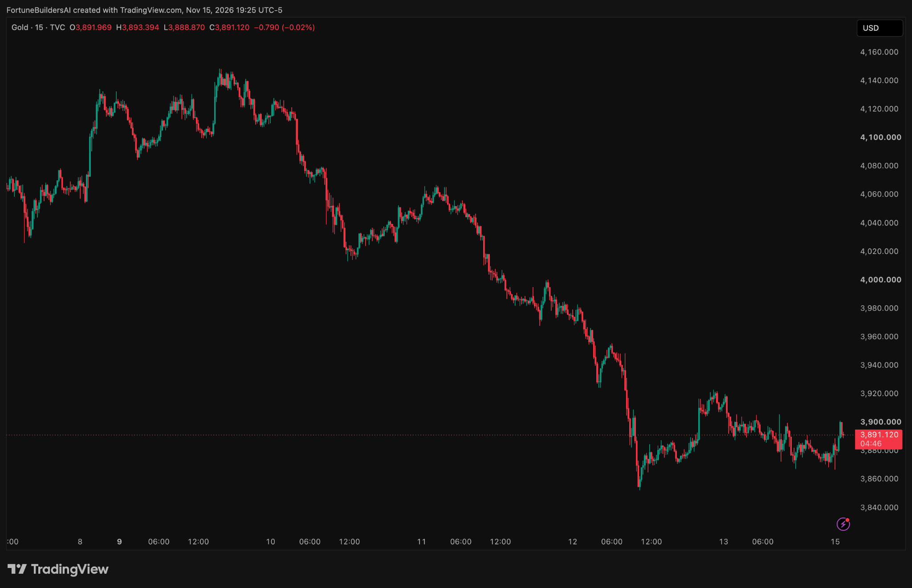

BAJISTA
La gráfica muestra máximos y mínimos descendentes. Bajo 3,920, favorecemos la presión bajista; una recuperación puede cambiar esa lectura.
Después de perder USD 4,030 y USD 4,000, la estructura reciente es bajista. Mientras no recupere la zona de 3,920, favorecemos la continuidad de la presión vendedora, con atención al soporte de 3,870.
Preparado el 15 de noviembre de 2026. Análisis educativo, no una señal.
La gráfica muestra máximos y mínimos descendentes. Bajo 3,920, favorecemos la presión bajista; una recuperación puede cambiar esa lectura.
Un cierre de 15 minutos por encima de la zona debilitaría el sesgo bajista inmediato. Por sí solo no confirmaría una tendencia alcista.
Miércoles 18 · 2:00 p. m. Miami y Colombia. Las actas pueden cambiar la percepción sobre las tasas y mover el dólar y el oro.
El rebote inicial perdió fuerza y el precio terminó muy por debajo de la referencia del domingo.
Lo que dijimos: favorecíamos un rebote mientras el oro se sostuviera sobre USD 4,030. Advertimos que perder esta zona debilitaría el escenario alcista y pondría USD 4,000 bajo observación.
Lo que pasó: en la captura de 15 minutos el precio superó 4,080 al comienzo de la semana, pero después cayó por debajo de 4,030 y 4,000. La nueva referencia es USD 3,891.120, alrededor de 4.4% por debajo de los USD 4,069.630 del domingo anterior. Son capturas puntuales, no cierres semanales.
Conclusión: la continuación alcista planteada no se sostuvo. La pérdida de las zonas advertidas acompañó el cambio bajista. La captura muestra el cruce, pero no verificamos aquí el momento exacto de cada cierre de vela. Consultar el reporte anterior.
Zonas aproximadas de la captura. No son órdenes ni objetivos garantizados; el gráfico no confirma cierres de cuatro horas.

Captura proporcionada · 15 de noviembre, 7:25 p. m. Miami. La última vela de 15 minutos aún se formaba y su precio podía cambiar.
Un cierre de 15 minutos sobre esta zona debilitaría la presión bajista inmediata. Vigilar después la reacción cerca de 3,940–3,960, sin asumir que el rebote continuará.
Zona de consolidación reciente. Nuestra lectura sigue bajista bajo 3,920, pero dentro de esta franja el precio puede oscilar y revertirse.
Un cierre de 15 minutos por debajo reforzaría la presión bajista y pondría en observación el mínimo aproximado de 3,850–3,860. Una ruptura puede fallar.
La reacción del mercado tiene varias causas; ninguna explica por sí sola cada movimiento.
El BLS informó que los precios al consumidor de EE. UU. subieron 0.4% en octubre. La inflación influyó en las expectativas sobre las tasas de la Fed.
El IPP subió 0.3% mensual y 6.5% en 12 meses. El dato anual muestra que la presión de precios seguía presente.
La fortaleza del dólar y la subida de rendimientos acompañaron la caída. Las tasas más altas pueden elevar el costo de mantener oro, que no paga intereses.
Ambas ciudades comparten horario esta semana. Verifica los horarios antes de operar.
La lectura del consumo estadounidense puede modificar las expectativas de crecimiento y tasas. Observa la reacción del dólar y los rendimientos.
Se publica el detalle de la reunión del 27 y 28 de octubre. Son actas de una reunión pasada, no una nueva decisión de tasas.
Una subida sostenida puede mantener presión sobre el oro. Si ambos retroceden, el metal podría rebotar; el precio puede reaccionar de otra forma.
Consulta el calendario de ventas minoristas y el calendario de la Fed. Los horarios pueden cambiar.
Cuando exista una actualización revisada, aparecerá aquí con su fecha y hora.
Dos formas de acompañar tu lectura del mercado.

Organiza tu análisis en TradingView con referencias visuales de entrada, riesgo y objetivos.

Analiza el mercado con un mentor y conoce el proceso detrás de la metodología Kill Zone + Liquidez.
La dirección es una interpretación educativa basada en información disponible al momento de publicación. Los niveles indican cuándo revisar el escenario, no garantizan el comportamiento del mercado. Cada usuario decide si opera y administra su propio riesgo.
El análisis combina la captura proporcionada con fuentes oficiales y cobertura de mercado.